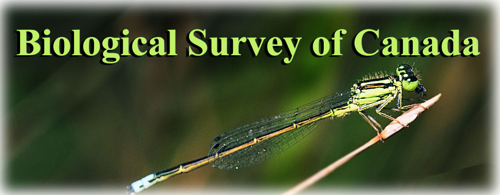

|  Briefs |
|||||||||||||||||||||||||||||||||||||||||||||||||||||||||||
|
About
the Biological Survey BSC Publications Canadian Journal of Arthropod Identification Information Resources Scientific Projects Arthropods of Canadian Grasslands Arthropods of Newfoundland . . About the Canadian Fauna
|
Le rôle des spécimens de référence pour valider les recherches faunistique et écologique
Les spécimens de référence déposés dans les collections d’histoire naturelle sont la seule manière fiable de vérifier l’identité des espèces utilisées dans les études biologiques. Cependant, malgré leur importance dans la confirmation des résultats de recherche, le dépôt de spécimens de référence est très rare, surtout dans les études à caractère non-taxonomique. De plus, plusieurs revues scientifiques n’exigent pas ou ne recommandent pas le dépôt des spécimens de référence. Ce mémoire résume l’utilité des spécimens de référence et présente un aperçu des règles d’utilisation des spécimens en recherche systématique, faunistique et écologique. Les avantages d’avoir des spécimens de référence disponibles pour des projets futurs ainsi que les conséquences de ne pas désigner et déposer de spécimens de référence sont discutés en utilisant des exemples provenant de la littérature. Des recommandations sur l’utilisation adéquate de spécimens de référence sont données pour les organismes accordant des subventions, les organismes émettant les permis de recherche, les départements universitaires, les rédacteurs de revues scientifiques ainsi que pour les collections d’histoire naturelle.
What
Constitutes a Voucher Specimen? Designation of voucher specimens is a long-established practice in systematic research, through the designation of type specimens of newly described species. The requirement for a one-to-one correspondence between a scientific name and a real organism is undoubtedly responsible for the convention in systematics of depositing authoritatively identified specimens from a study in a research collection, whether the specimens are types or not. The advent of molecular systematics has led to the use of another type of taxonomic voucher specimen, in which DNA sequences are deposited in widely accessible electronic databases such as GenBank (but see Ruedas et al. (2000) for a discussion of the unsuitability of sequence data alone as voucher specimens and Harris (2003) for a sobering example of error rates in published GenBank sequences). One of the differences between systematic studies and faunistic or ecological studies is that the latter may accumulate many more specimens (up to hundreds of thousands in some large scale biodiversity inventories) and many more species. However, correct identification of taxa is just as important and, thus, specimens should be available so that other workers can confirm the identity of the study organisms. Voucher specimens in faunistic and ecological research should be prepared in the same way and accompanied by the same data as specimens collected for systematic research. The number of specimens that should be deposited as vouchers from such studies is an additional consideration, discussed below. Preparation and
Deposition of Vouchers In order to ensure long-term care and maintenance of voucher specimens, and to facilitate access by the research community, the specimens must be deposited in a recognized natural history collection. Indeed, one of the major roles of natural history collections is to ensure that such specimens are made available for study and for use in subsequent research projects, such as systematic revisions or studies of long term patterns of change in arthropod communities (Danks et al. 1987, Wiggins et al. 1991, Danks and Winchester 2000, Ponder et al. 2001, Favret and DeWalt 2002). Each collection has its own policies on voucher specimens. For example, some museums add distinguishing labels to vouchers in order to link the specimen to a particular study while others (usually smaller collections) may simply incorporate vouchers into the main research collection and rely on the specimens’ collection label to associate them with the study. With the increase in specimen-level databases using barcodes or unique identifier codes associated with each specimen, vouchers can be identified as such in the museum’s database, with additional data fields linking the specimen to the original study. Current
Requirements, Policies and Recommendations on Vouchers Genetic vouchers – Deposition of genetic sequence data in centralized electronic sites such as GenBank or EMBL is now a requirement of many refereed journals publishing the results of molecular studies. Unfortunately, those same journals do not usually require separate deposition of a voucher specimen to ensure that the specimens from which genetic material was extracted were correctly identified in the first place. Ecological vouchers – In contrast to taxonomic work, there is no established history of depositing specimens collected in the course of an ecological study. However, correct and verifiable identifications are just as important in ecological studies and there is absolutely no reason that requirements for voucher deposition in taxonomic studies should not apply to faunistic and ecological studies, especially since identifications in such studies are probably made more frequently by non-specialists using published keys only. Biochemical or physiological vouchers – These conclusions about ecological vouchers also apply to specimens collected in the course of physiological or biochemical studies. Just as specimens within a group of species, or even within a species, vary morphologically or ecologically, there can be major variations at the species or population level in such characteristics as pheromone chemistry, responses to secondary plant compounds and other chemical substances, and physiological responses to environmental changes. The Natural Sciences and Engineering Research Council of Canada has recognized the importance of natural history collections in research by publishing a Framework for Researchers Working with University-Based Collections (NSERC 2003) including a statement on the importance of both type specimens and voucher specimens in documenting the results of research. One of the pivotal collaborative roles that natural history collections can play in faunistic, ecological or physiological studies is in housing and maintaining the voucher specimens that permit verification of the identity of study organisms. Despite the clear value of voucher specimens in validating research, and acknowledgment by major granting agencies of that value, many journals do not require, or even recommend, deposition of vouchers as a condition of publication. Table 1 summarizes the editorial policies concerning voucher specimens of a small sample of Canadian and international entomological journals (as well as some general journals with occasional entomological content). Primarily systematic journals, such as Systematic Entomology, require voucher specimens to be deposited in a collection. However, with a few exceptions (e.g., Entomological News), most journals, including the Canadian ones sampled, either fail to mention voucher specimens in their instructions to authors or only “recommend” that such specimens be deposited. Table 1. Editorial policy on voucher specimens of selected journals, based on posted or published instructions to authors (as of June 2003). For each journal, the primary research focus is given, along with the stated policy on vouchers or type specimens.
How Many
Specimens? Guidelines on Depositing Vouchers The number of vouchers actually retained and deposited for long-term maintenance is largely dictated by the type of study. At the very least, one specimen of each species identified in a study should be designated as a voucher. However, one specimen often is not sufficient for a reliable subsequent identification. Depositing two or more vouchers increases the probability that one of the specimens will be a member of the sex needed for species-level identification, or will be a clean, undamaged specimen with necessary morphological structures clearly visible. Multiple voucher specimens can also be useful in showing the range of variation in characters for later studies as well as indicating if more than one species was combined in the original identified series. Multiple voucher specimens are also advantageous in cases where destructive sampling is required for species confirmation, as in the case of molecular characters. At least five to ten specimens of each species are recommended to ensure subsequent identification and to determine if all specimens identified are in fact conspecific. Systematic vouchers – In this case, the number of type specimens or vouchers is often dictated by the number of specimens available in museum collections or as a result of field work. In some cases species descriptions are based on only a single specimen. More specimens are preferable and will help to show the range of variation in characters of the species. In addition, larger numbers of specimens allow authoritatively identified specimens to be deposited in multiple collections, facilitating identification by other workers at those institutions. Genetic vouchers – In molecular studies, the part of the specimen from which DNA for sequence data is extracted is frequently destroyed, but efforts should be made to ensure that the rest of the specimen remains intact, and preferably retains the morphological characters that allow species-level identification (e.g., genitalia, secondary sexual characters, sclerites with distinctive colour patterns). In the case of species in which individuals are small, the entire specimen must sometimes be destroyed for sequencing. If this is the case, conspecific specimens from the same collection event, identified by a specialist, may be suitable vouchers. If additional tissue samples are to be taken from voucher specimens for subsequent DNA analysis, appropriate protocols for storage of tissues for DNA extraction should be followed (e.g., storage of specimens in -70ºC freezers, 95-100% ethanol). Here again, consultation with museum curators prior to beginning the study will ensure that correct procedures are followed. Ecological or physiological vouchers – Depending on the nature of the ecological study, thousands of specimens of a single common species may be collected; in this case, a subset of the series would obviously be sufficient to confirm the identity of the species. On the other hand, there are often differences in species characteristics or in the species assemblage of a community from habitat to habitat, or from season to season, within a larger-scale study. These differences increase the likelihood that multiple species may be collected and confused. To account for possible species or population differences, vouchers from ecological studies should include specimens of as many identified species as possible from across the range of habitats, seasons, treatments or other variables examined in the study. The Benefits of
Depositing Vouchers (and the costs of not doing so) Deposition of
vouchers permits long term studies In a similar, but larger scale study, Favret and DeWalt (2002) used newly assembled electronic databases of holdings of Ephemeroptera and Plecoptera in the Illinois Natural History Survey collection to assess faunal changes (range expansions, range reductions, changes in abundance) in those orders over the course of the 20th Century in Illinois. Resh (1976) used old collection data to confirm (and correct) species identifications of caddisflies (Trichoptera) collected in Ohio and Illinois several years previously as well as documenting changes in the fauna resulting from habitat degradation over a 50-year period (see also Resh and Unzicker (1975)). Leibherr and Song (2002) assessed carabid beetle (Coleoptera) diversity in bogs and marshes in New York, comparing their field data to specimens collected at least 75 years earlier in order to assess change in the community over time. In addition to these specific examples other authors (e.g., Shaffer et al. 1998, Ponder et al. 2001) have recognized the general value of specimens housed in natural history collections in assessing changes in species distributions and abundance over time. Unpublished data on selected groups of Canadian grassland arthropods provide the potential for assessing long-term change in those habitats. Manitoba entomologist Norman Criddle collected large numbers of ground beetles (Coleoptera: Carabidae) in grassland habitats in Aweme, Manitoba in the early part of the 20th Century. Criddle kept extensive and exhaustive field notes which survive largely intact, and he deposited specimens from his field studies in a number of insect collections, notably those at the University of Manitoba and the Canadian National Collection of Insects, although Criddle’s Coleoptera are found almost worldwide in collections as a result of exchanges (R.E. Roughley, D. Pollock pers. comm.). Examination of those specimens in museums allows current workers to confirm the identity of Criddle’s material against current species limits and facilitates follow-up inventory studies of carabid diversity at the Aweme site almost 100 years later. Criddle also collected large numbers of acalyptrate Diptera (especially Chloropidae and Agromyzidae) in southern Manitoba grasslands during the summers of 1915-1916 and sent the samples to the dipterist J.M. Aldrich in Washington DC, who identified the specimens and deposited them in the Smithsonian Institution collection. Because both Criddle and Aldrich made copious notes on these specimens, because later workers retained these notes (now housed in the University of Manitoba and the Lyman Entomological Museum), and because Aldrich deposited voucher specimens, cross-referenced to the field notes, it would be a relatively simple matter today to confirm Aldrich’s species concepts, generate an updated species list and replicate Criddle’s survey after a century of change in the habitat. Deposition of
vouchers permits correction of published errors Ruedas et al. (2000) cited a number of molecular studies in which the results were suspect, despite the deposition of DNA sequence data in electronic databases. Subsequent examination of documented voucher specimens from which DNA was extracted revealed misidentification of some species and incomplete identification of other species now known to constitute complexes of sibling species. Baumann (1974) examined old museum specimens of Alloperla imbecilla (Say), a putatively widespread eastern North American species of Plecoptera, and found that the species regarded by most authors as A. imbecilla was in fact two species: A. imbecilla, largely restricted to the Ohio River drainage; and A. atlantica Baumann, widespread in eastern North America. Most voucher specimens of “A. imbecilla” deposited by previous authors were actually specimens of A. atlantica. Ellison (1991) published an ecological study of case-bearing moths (Lepidoptera: Coleophoridae) in New England. Apparent inconsistencies in the reported phenology and host plant of one of the species prompted J.-F. Landry, a specialist in coleophorid systematics, to re-examine the vouchers deposited by Ellison. Because the specimens were available, Landry was able to correct the identification of the coleophorid and resolve the apparent ecological and behavioural differences in the larvae (J.-F. Landry, pers. comm.) The above is only a small subset of the available examples. In the field of biological control alone, there is a large body of literature (Sabrosky 1955, Danks 1988, Huber 1998, and many papers cited in those publications) listing case studies of failed attempts, primarily resulting from misidentified pest species or misidentified natural enemies. Some such errors have been traced, confirmed and corrected in cases where vouchers were deposited. Deposition of
vouchers permits resolution of species limits Harper and Harper (1981) used extensive voucher collections of mayflies (Ephemeroptera) collected by the Canadian Northern Insect Survey and the Service de l’Environnement de la Société de la Baie James to document significant range extensions and one new species in the arctic mayfly fauna. Similarly, Ricker (1966) used old museum specimens from arctic surveys to resolve distribution patterns of northern Canadian stoneflies (Plecoptera). Lack of vouchers
renders published results unverifiable In contrast to McCorquodale’s (2001) convincing illustration of the value of vouchers, another paper in the same issue of the same journal (Paquin and Dupérré 2001) recorded many new North American, Canadian and Quebec records in the course of a large biodiversity survey of boreal forest Coleoptera. Unfortunately, there was no indication as to where (or even if) voucher specimens were deposited and, as a result, there is no way for other workers to confirm the identity of those species in future. In addition to documenting several misidentified species in studies that did match their sequence data to known voucher specimens (see above), Ruedas et al. (2000) found that 73% (41 of 56) of the papers they surveyed in Molecular Phylogenetics and Evolution did not link their sequence data to a voucher specimen at all; thus there is no way of knowing whether the species identifications were correct or not. Although some errors in past biological control programs can be traced and corrected, as discussed above, many early biocontrol introductions were not usually accompanied by deposition of voucher specimens (Sabrosky 1955, Danks 1988, Huber 1998) so there is no way to know what went wrong. The Canadian Nature Federation’s lady beetle survey in the 1990s (www.cnf.ca/beetle/index.html) was, unfortunately, a failure from a scientific perspective because the nationwide register of coccinellid species was based almost entirely on sight records submitted by non-specialists. Participants were not encouraged to collect specimens to serve as vouchers and the survey was rife with apparent misidentifications of species that cannot be corrected by subsequent examination of specimens (Marshall 2000). Thus, the data from the survey are useless for rigorous scientific analysis. In contrast, a more recent amateur initiative in eastern Canada, the Atlantic Dragonfly Inventory Project coordinated by P.M. Brunelle, has the potential to contribute to considerable scientific research because over 90% of the records in the species database are supported by voucher specimens. “Recommendations” in the editorial policy of refereed journals on deposition of vouchers (Table 1) obviously have little impact on most authors. In three randomly selected issues of The Canadian Entomologist published in 2002, 30 papers involved species-level identification of insects, but only nine (six of which were taxonomic papers) mentioned deposition of voucher specimens. In two randomly selected issues of the Annals of the Entomological Society of America for 2002, 31 papers dealt with named species but only nine (eight of which were taxonomic) mentioned voucher deposition. The numbers are similarly discouraging for other journals. Most identification work performed by freelance consultants or contractors is not documented by deposition of vouchers. This is particularly disturbing because many consultants are not trained specialists in arthropod identification and, in the absence of vouchers, their work cannot subsequently be verified by specialists. In many cases, such identifications subsequently checked by specialists have been found to have very high error rates (Danks and Winchester 2000, Marshall 2000). Given that the specimen identifications derived from contract work often are used in making decisions on environmental impact assessment, land use planning and conservation priorities, the potential negative implications of not having vouchers available for verification are significant and far-reaching. Recommendations 1. Agencies that fund systematic, faunistic and ecological research should acknowledge explicitly that voucher specimens constitute necessary documentation of research. Such a policy would be consistent with the growing recognition of the importance of natural history collections in biological research. 2. Field research in parks, reserves, field stations or other protected areas that require workers to obtain permits for conducting research should stipulate that deposition of vouchers is a necessary condition of initial permit approval and, especially, of renewal. Many research permits issued by National or Provincial Parks now require deposition of at least a synoptic collection of specimens in a recognized institution. Permits for entomological research at the Mont St. Hilaire UNESCO Biosphere Reserve in Quebec stipulate that vouchers must be deposited in the Lyman Entomological Museum. Adherence to this condition is monitored by Reserve staff and renewals of permits are contingent upon this condition being met. 3. The editorial policy of entomological journals should require (not simply recommend) that voucher specimens be deposited in recognized institutional collections and that the depository be clearly identified in the paper. Many journals already require documentation of type specimens and molecular sequences; it would be a logical extension of editorial policy to make other research equally verifiable. 4. University departments should require that deposition of vouchers be a requirement of successful thesis completion. Many universities, and the agencies that fund the research, now require that all relevant animal care, research ethics, biohazard and environmental impact certificates be submitted as appendices to the final version of a thesis, to demonstrate that the research was conducted in accordance with good research practices. Similarly, confirmation that vouchers have been deposited in a named institutional collection should accompany final versions of theses submitted for deposition. In the author’s experience, strong “recommendations” during a thesis defence to deposit vouchers generates enthusiastic support at the time (when much is at stake), but little concrete action after the fact. 5. Institutional natural history collections should be encouraged to accept and curate voucher specimens from faunistic and ecological studies, and should establish a policy on voucher specimens that is available to all potential researchers prior to starting a study. Some collection staff are hesitant to receive vouchers (especially in large numbers); reasons for this may include poor-quality specimens submitted as vouchers in the past, insufficient space to house vouchers, and a focus on other projects and taxa in the museum’s current research. None of these objections should be an obstacle. Collections can provide appropriate guidance (through the preparation and distribution of instructions and recommendations) to untrained personnel on proper procedures for specimen preparation. Such instructions and guidelines are widely available to researchers initiating a new study. Furthermore, if researchers contact the appropriate collection early enough in the project planning stage, they can be encouraged to provide in their budget for the proper preparation, identification and curation of vouchers. Space in collections is almost always at a premium, but if a particular collection is too crowded or has a different taxonomic or ecological focus, an alternative depository could be suggested. 6. A database of Canadian entomological collections willing to accept vouchers should be established and maintained on the Biological Survey of Canada website. This would allow researchers to check quickly which collections are available, and would allow museums to change their information as the focus of the collection changes. The advantage of an electronic database is that it allows changes in personnel, institutional policies, website and email addresses and collection status to be updated, as well as providing a gateway to any available databases housed on the websites of those institutions.
Baumann, R.W. 1974. What is Alloperla imbecilla (Say)? Designation of a neotype and a new Alloperla from eastern North America (Plecoptera: Chloroperlidae). Proceedings of the Biological Society of Washington 87: 257- 264. Danks, H.V. 1988. Systematics in support of entomology. Annual Review of Entomology 33: 271-296 Danks, H.V. 1991. Museum collections: fundamental values and modern problems. Collection Forum 7: 95-111. Danks, H.V., G.B. Wiggins and D.M. Rosenberg. 1987. Ecological collections and long-term monitoring. Bulletin of the Entomological Society of Canada 19: 16-18. Danks, H.V. and N.N. Winchester. 2000. Terrestrial arthropod biodiversity projects - building a factual foundation. Biological Survey of Canada (Terrestrial Arthropods) Document Series No. 7. 38 pp. Ellison, A.M. 1991. Ecology of case-bearing moths (Lepidoptera: Coleophoridae) in a New England salt marsh. Environmental Entomology 20: 857-864. Favret, C. and R.E. DeWalt. 2002. Comparing the Ephemeroptera and Plecoptera specimen databases at the Illinois Natural History Survey and using them to document changes in the Illinois fauna. Annals of the Entomological Society of America 95: 35-40. Franclemont, J.G. 1980. “Noctua c-nigrum” in eastern North America, the description of two new species of Xestia Hübner (Lepidoptera: Noctuidae: Noctuinae). Proceedings of the Entomological Society of Washington 82: 576-586. Francoeur, A. 1976. The need for voucher specimens in behavioral and ecological studies. Bulletin of the Entomological Society of Canada 8(2): 23. Harper, F. and P.P. Harper. 1981. Northern Canadian mayflies (Insecta; Ephemeroptera), records and descriptions. Canadian Journal of Zoology 59: 1784-1789. Harris, D.J. 2003. Can you bank on GenBank? Trends in Ecology and Evolution 18: 317-319. Huber, J.T. 1998. The importance of voucher specimens, with practical guidelines for preserving specimens of the major invertebrate phyla for identification. Journal of Natural History 32: 367-385. Kelleher, J. 1988. Suggestions for voucher specimens of imported species. Biological Control News 1: 26-27. Knutson, L. 1984. Voucher material in entomology: a status report. Bulletin of the Entomological Society of America 30(4): 8-11. Lee, W.L., Bell, B.M. and J.F. Sutton. 1982. Guidelines for acquisition and management of biological specimens. A report of the participants of a conference on voucher specimen management. Association of Systematics Collections, Snow Museum of Natural History, University of Kansas, Lawrence, KS. 42 pp. Liebherr, J.K. and H. Song. 2002. Distinct ground beetle (Coleoptera: Carabidae) assemblages within a New York state wetland complex. Journal of the New York Entomological Society 110: 127-141. Marshall, S.A. 2000. Comments on error rates in insect identifications. Newsletter of the Biological Survey of Canada (Terrestrial Arthropods) 19(2): 45-47. Martin, J.E.H. 1977. The Insects and Arachnids of Canada. Part 1. Collecting, preparing and preserving insects, mites and spiders. Agriculture Canada Publication 1643. 182 pp. McCorquodale, D.B. 2001. New records and notes on previously reported species of Cerambycidae (Coleoptera) for Ontario and Canada. Proceedings of the Entomological Society of Ontario 132: 3-13. Munroe, E.G. 1973. A supposedly cosmopolitan insect: the celery webworm and allies, genus Nomophila Hübner (Lepidoptera: Pyralidae: Pyraustinae). The Canadian Entomologist 105: 177-216. NSERC. 2003. Framework for researchers working with university-based collections. Natural Sciences and Engineering Research Council of Canada. Published electronically at http://www.nserc.ca/programs/framework_e.htm Paquin, P. and N. Dupérré. 2001. Beetles of the boreal forest: a faunistic survey carried out in western Québec. Proceedings of the Entomological Society of Ontario 132: 57-98. Ponder, W.F., G.A. Carter, P. Flemons and R.R. Chapman. 2001. Evaluation of museum collection data for use in biodiversity assessment. Conservation Biology 15: 648-657. Resh, V.H. 1976. Changes in the caddis-fly fauna of Lake Erie, Ohio, and of the Rock River, Illinois, over a fifty year period of environmental deterioration. Proceedings of the First International Symposium in Trichoptera, Lutz am See, Austria, 1974. Dr. W Junk, The Hague. Pp. 167-170. Resh, V.H. and J.D. Unzicker. 1975. Water quality monitoring and aquatic organisms: the importance of species identification. Journal of the Water Pollution Control Federation 47: 9-19. Ricker, W.E. 1966. Some Plecoptera from the far north. The Canadian Entomologist 76: 174-185. Ruedas, L.A., J. Salazar-Bravo, J.W. Dragoo and T.L. Yates. 2000. The importance of being earnest: what, if anything, constitutes a “specimen examined?”. Molecular Phylogenetics and Evolution 17: 129-132. Sabrosky, C.W. 1955. The interrelations of biological control and taxonomy. Journal of Economic Entomology 48: 710-714. Shaffer, H.B., R.N. Fisher and C. Davidson. 1998. The role of natural history collections in documenting species declines. Trends in Ecology and Evolution 13: 27-30. Sperling, F.A.H., G.S. Anderson and D.A. Hickey. 1994. A DNA-based approach to the identification of insect species used for postmortem interval estimation. Journal of Forensic Sciences 39: 418-427. Wells, J.D. and Sperling, F.A.H. 2000. Commentary on: Sperling FAH, Anderson GS, Hickey, DA. A DNA-based approach to the identification of insect species used for postmortem interval estimation. J Forensic Sci 1994; 39: 418-427 and on Vincent S, Vian JM Carlotti MP. Partial sequencing of the cytochrome oxydase b subunit gene I: a tool for the identification of European species of blow flies for postmortem interval estimation. J Forensic Sci 2000: 45; 820-823. Journal of Forensic Sciences 45: 1358-1359. Wheeler, T.A., J.T. Huber and D.C. Currie. 2001. Label data standards for terrestrial arthropods. Biological Survey of Canada (Terrestrial Arthropods) Document Series No. 8. 20 pp. Wiggins, G.B., S.A. Marshall and J.A. Downes. 1981. The importance of research collections of terrestrial arthropods. A brief prepared by the Biological Survey of Canada (Terrestrial Arthropods). Bulletin of the Entomological Society of Canada 23 (2), Supplement. 16 pp. Wilkinson, C. 1981. Modern biosystematics. Entomologist’s Gazette 32: 205-215. Yoshimoto, C.M. 1978. Voucher specimens for entomology in North America. Bulletin of the Entomological Society of America 24: 141-142.
Prepared on behalf of the Biological Survey by Terry A. Wheeler (with extensive comments and suggestions from members of the Scientific Committee, particularly H.V. Danks, K.D. Floate, D.J. Giberson, J.T. Huber, J.F. Landry, S.A. Marshall, R.E. Rougley, F.A.H. Sperling and N.N. Winchester) Published by the Biological Survey of Canada (Terrestrial Arthropods) 2003. ISBN 0-9689321-2-6 |
|